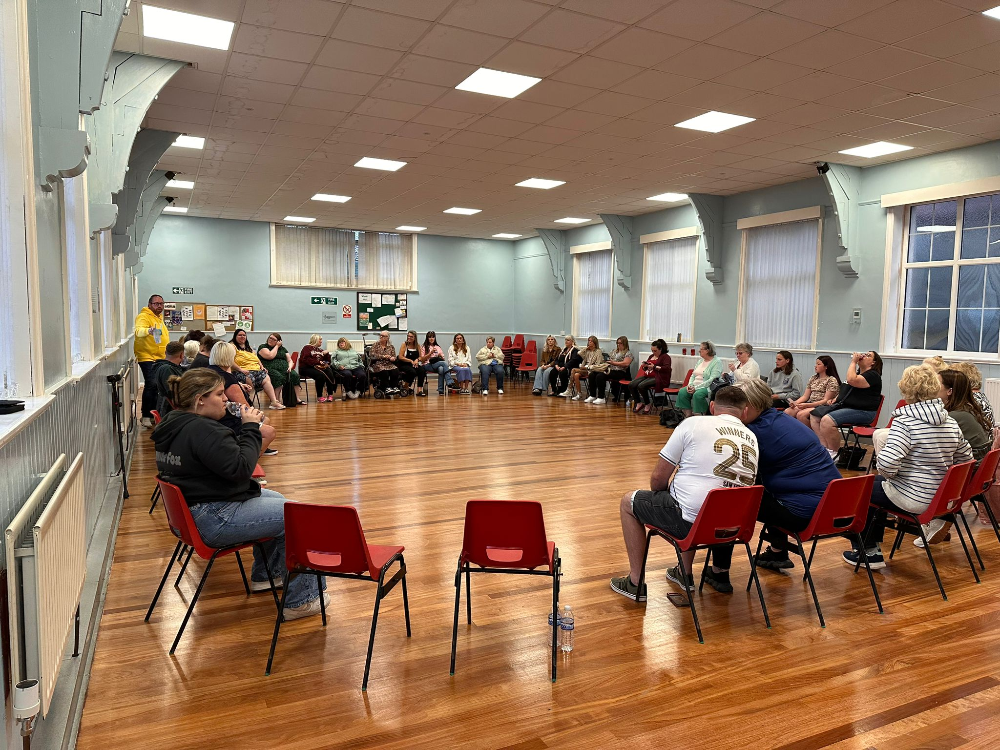
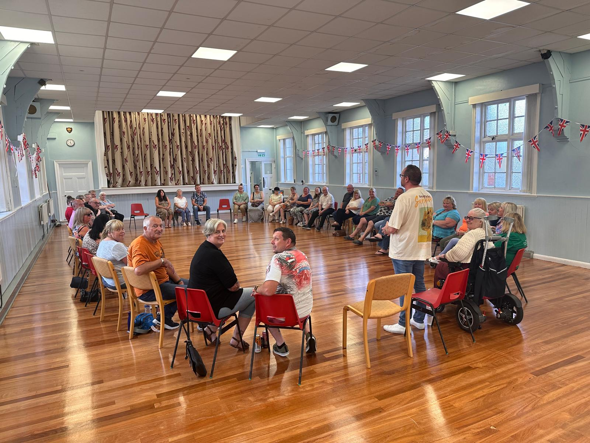

Complete beginners
No previous experience of Spiritualism or mediumship is needed.

The Circle @ Greenside
The Circle @ Greenside is a place that welcomes anyone who wants to discover what an Open Circle is, whether you're completely new, have been developing for years, or you're simply curious and would like to know more.
We're a community where nobody is judged and there are no right or wrong questions or answers. We all experience Spirit in different ways, and that's exactly as it should be.
Come Along

A typical evening
When you arrive, the chairs are usually already set out in a circle, although people often help put them out if they arrive early.
I have started explaining a little more about what the evening may involve, especially when we have people joining us for the first time. We begin with an opening prayer and, depending on the evening, we may also have a short meditation.
There is always room for questions and answers, and if somebody feels they have something from Spirit they're encouraged to share it. It doesn't have to be a full message. Sometimes it may only be a word, a feeling or something small, because that small piece of evidence could mean a great deal to somebody else.
Nobody has to introduce themselves or stand up unless they want to. If somebody is new, we completely understand that they may prefer to sit, listen and see what the evening is all about.
We finish with a closing prayer, and if you'd like to stay afterwards you're very welcome to join us for a tea, coffee or hot chocolate and a chat.

Come as you are
You don't have to stand up. You don't have to give a message. You don't even have to say anything if you don't want to.
Some people come along simply to sit and listen, while others enjoy taking part. Both are equally welcome.
We all started somewhere.
Who can come along?
No previous experience of Spiritualism or mediumship is needed.
A relaxed place to keep learning, exploring and building confidence.
You're just as welcome to come along, share the evening and join in.
You don't need to know what you believe. You're welcome to come and experience it for yourself.
If you'd rather sit back and listen, that's absolutely fine too.
You don't need to be a Spiritualist to walk through the door.
A few things people often ask
No. Whether you've been involved with Spiritualism for years or have never walked into a church or circle before, you'll receive exactly the same welcome.
That's absolutely fine. There's never any pressure to take part and you're very welcome to simply sit and listen.
Yes. What's shared within the circle stays within the circle, and everyone's experiences are treated with respect.
The Circle is normally held every four weeks. If anything changes, we'll always let people know.
Come along
Greenside Community Centre
NE40 4AA
Every four weeks unless anything changes.
Doors open at 6:45pm.
We usually begin between 7:00pm and 7:15pm.
We normally finish around 8:15pm to 8:20pm.
£3 entry.
Optional £1 raffle.
Bottled water is available when you arrive.
Tea, coffee and hot chocolate, when available, are served afterwards if you'd like to stay for a chat.
The venue is wheelchair accessible.
There is a very small car park with extremely limited spaces, with street parking available nearby.
Dates and any changes are shared on The Circle @ Greenside Facebook page.
Visit The Circle on FacebookYour first visit
If you're feeling a little nervous before coming along, honestly, you have nothing to worry about.
We're a very welcoming group, and every single one of us was new once.
There's never any pressure to do anything you're not comfortable with. If you'd rather just come along, sit down and see what it's all about, that's absolutely fine.
You'll be made very welcome.